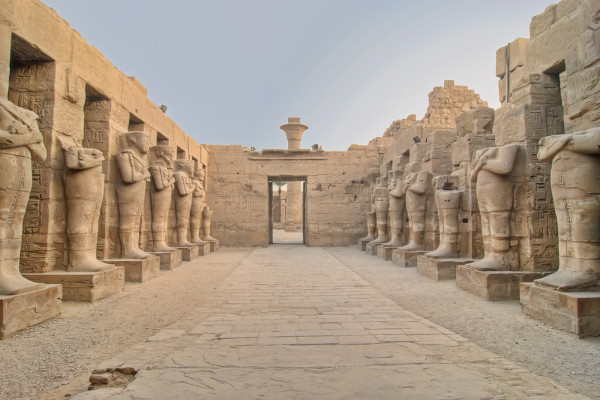
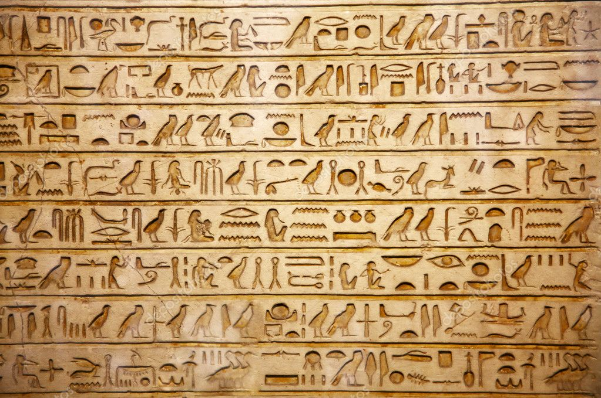
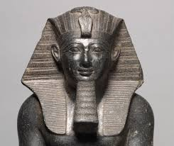
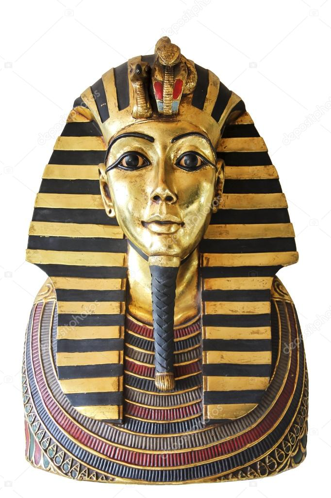
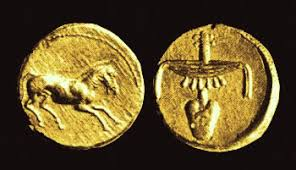
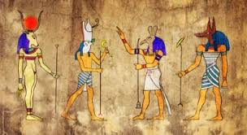
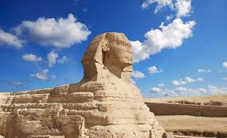
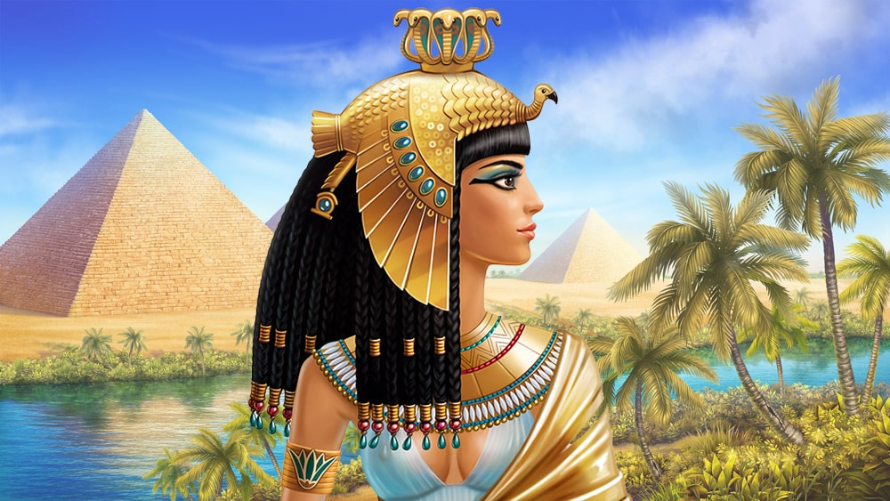

В пятом классе советской и постсоветской школы нам всем рассказывали, что пирамиды построили тысячи и даже миллионы бесправных и угнетённых рабов. Это миф очень живучий, но очень локальный, существовавший только в Советском Союзе. Изобретён он был по личному приказу товарища Сталина в конце 1930-х годов для подтверждения теории формаций Маркса.
Не одно тысячелетие люди восхищаются великой и таинственной цивилизацией, некогда процветавшей в долине Нила. Самые разные культуры используют египетские сюжеты и мотивы. За столь долгий срок писатели и художники так много фантазировали на эту тему, что смогли создать массу мифических историй о Древнем Египте.
Давайте вспомним самые популярные заблуждения об этой далекой цивилизации.
Иудеи и Древний Египет
О библейской истории "Исход", когда великий пророк Моисей организовал исход евреев из Египта, произошедший во второй половине II века до н., а потом 40 лет водил за собой по пустыне, знают, если не все, то очень многие: евреи страдали в плену у египтян, которые нещадно их эксплуатировали и "делали жизнь их горькою от тяжкой работы над глиною и кирпичами".
Совсем иное говорят египетские источники: замешивание глины с соломой для изготовления кирпичей — самая лёгкая физическая работа, которую в принципе могли предложить человеку. Уж точно полегче обтёсывания гигантских каменных блоков, например.
Кроме того, никаких упоминаний об исходе иудеев, "казнях египетских" и прочем в древнеегипетских источниках тоже ничего не сказано. Так было или не было?
Существуют ли знатоки древнеегипетского языка?
Нет, и никогда не существовал. Конечно, жители Древнего Египта говорили и писали на каком-то наречии. Первый известный текст того времени датируется XXXII веком до нашей эры. Древнеегипетская же культура просуществовала до IV, а то и VII века нашей эры. За три с половиной тысячи лет и письменность, и язык поменялись до неузнаваемости. Сегодня египтологи выделяют среднеегипетский язык, новоегипетский язык, позднеегипетский язык, а то и что-нибудь более узкое вроде языка Текстов Пирамид.
При этом, даже длительное изучение любого из этих языков вовсе не даёт гарантии понимания какого-либо другого. Поэтому не верьте, когда литературные или кинематографические археологи лихо читают "с листа" любой древнеегипетский текст. Это слишком далеко от истины. В современном мире нет ни одного человека, который мог бы читать на любом из мёртвых египетских языков. Только кропотливая расшифровка.
Кроме того, даже если если что-то и расшифровано, то "успокоить мумию, прочитав ей заклинание на ее родном языке", не удастся: мы никакого понятия не имеем о фонетике языка того периода.
Строили ли пирамиды рабы?
Со школьных лет мы помнит, что "пирамиды построили тысячи и даже миллионы бесправных и угнетённых рабов". Однако — это устойчивый миф: на работах были заняты свободные граждане Египта, так называемые "хему нисут", "царские люди", в то время, когда не были заняты на сельскохозяйственных работах.
И к этому социальному слою принадлежало почти все население Древнего Египта. Они работали в царских, храмовых и крупных частных владениях — и тогда кормились из казны (то есть получали своеобразную зарплату). Или же работали на своей земле и тогда кормились самостоятельно. Когда других работ не было, их отправляли на строительство царских гробниц или ирригационных сооружений.
Конечно, рабство в Древнем Египте существовало, но не в гигантских масштабах. К примеру, в одной из надписей Тутмоса III упоминается, что он привёл с войны около трёх сотен рабов. Ещё один пример — вельможа, в хозяйстве которого работало несколько сотен "хему", хвалился тем, что купил одного раба. И это при том, что стоили рабы не так дорого — например, сохранился текст, в котором женщина по имени Ири-Нофрет покупает молоденькую сирийскую девочку за эквивалент примерно 400 граммов серебра. Значит, рабство просто было очень мало распространено.
Спустя полторы тысячи лет, когда наступила эпоха Нового царства, строители царских гробниц вообще стали одними из самых уважаемых людей в Египте. Они жили в особом посёлке неподалёку от царского некрополя и не стеснялись устраивать забастовки, если их переставало устраивать вознаграждение за труд.
Проклятье фараонов
Существует миф, что смерть настигает каждого, кто потревожит покой мертвого царя. Тут можно вспомнить о проклятии Тутанхамона, в гробнице которого будто бы обнаружили табличку с надписью "Смерть лёгкими шагами настигнет каждого, кто нарушит покой фараона". И это проклятие исполнилось якобы спустя тысячелетия: в течение приблизительно полутора лет от якобы естественных причин погибли шесть человек, принимавших участие в открытии гробницы. Как оказалось, это не более, чем легенда.
Упоминается и другой случай: в 1993 году была вскрыта царская гробница, в которой "нашли" надпись "Великая богиня Хатор дважды покарает всякого, кто посмеет осквернить эту могилу". Вскоре после этого у руководителя раскопок случился сердечный приступ.
Однако в египетской магической и религиозной практике не было понятия "проклятье" как такового. Магические способы извести, скажем, любовника жены существовали, но этот обряд требовал физического контакта с человеком.
То же относится и к оживающим мумиям. Египтяне в принципе не понимали идеи оживления мертвых и не отвлекали их от важнейшего посмертного бытия. Даже в сказках и то никогда не возвращали мертвецов и не просили у них советов. И уж точно не стали бы накладывать на усопшего царя заклятие, обязывающее его встать через три тысячи лет и начать убивать.
Также стоит заметить, что большинство гробниц, как царских, так и частных, неоднократно вскрывались ещё самими египтянами. И если простых людей за это карали (ну, уголовное правонарушение вообще-то, и судебные протоколы сохранились), то царям, открывающим гробницы своих предшественников, ничего за это не было.
Как звали египетских царей?
В романах о древнем Египте, даже написанных профессиональными египтологами ("Уарда" Георга Эберса, например), герои обычно зовут царя так, как мы привыкли по учебникам истории. Рамсес II, например, или Пепи I. Но это исключительно современные их названия, введенное для удобства исследователе.
На самом же деле каждый уважающий себя царь носил в общей сложности пять имен — личное, тронное, хорово-золотое и "имя двух владычиц", то есть богинь Верхнего и Нижнего Египта.
Таким образом, какого-нибудь Тутмоса III звали на самом деле Хор Канехет-хаиме-Уасет, Хор в Золоте Джосер-хау. Две владычицы Уахнесит, царь и государь Менхеперра, сын Ра Тутмос.
А его подданные говорили о нём как о Его Величестве Менхеперра. И вот это тронное имя было практически уникальным и в нумерации не нуждалось.
Как выглядели древнеегипетские деньги?
А никак: их в Древнем Египте просто не существовало. Конечно, египтяне сделали серебро, медь и золото неким универсальным эквивалентом, но непосредственно в торговле металл не участвовал. Зато была мера веса под названием "дебен", размер которой за несколько тысяч лет изменился от 13.5 граммов до примерно 90 граммов. Дебен условно делился на двенадцать "китов".
Вот поэтому тогда можно было купить "саван из тонкого льна ценой в пять китов серебра, отрез льна ценой в три кита серебра и одну треть" и так далее. То есть фактически имел место натуральный обмен. А монеты появились только в конце шестого века до нашей эры.
Все египтяне ходили в белых набедренных повязках
Казалось бы, это знают все. И именно так египтяне изображены на фресках из гробниц. Но фокус в том, что изображается вовсе не "этот" свет, а "тот", загробный мир, где вроде бы все так же, как в этом, но чуть лучше.
В реальности ходить на экваторе в тряпочках, не прикрывающих плечи, очень глупо (чернокожими-то египтяне не были), а выходить в поле в белом ещё глупее. К тому же вся найденная при раскопках одежда — цветная. Вообще же, к любым бытовым свидетельствам из гробниц надо относится с осторожностью.
Крал ли Наполеон нос у сфинкса?
Гигантская статуя Сфинкса — мифического существа с головой женщины, телом льва и крыльями птицы — охраняет вход в одну их египетских пирамид уже шесть с половиной тысяч лет. Сколько времени она лежит там с отбитым носом — неизвестно. В том, что нос Сфинкса был намеренно отбит по каким-то особым соображениям, обвиняли разные армии и отдельных личностей — британцев, немцев, арабов.
Однако в основном вину все же принято перекладывать на Наполеона. Причем обвинения эти совершенно беспочвенны. Единственным, про кого можно с уверенностью сказать, что он действительно нанес Сфинксу ущерб, был суфийский фанатик Мухаммед Саим аль-Дах, которого местные жители забили насмерть за вандализм в 1378 году.
Есть изображения Сфинкса без носа, датированные 1886 годом. Так что, и британская, и германская армии, побывавшие здесь во время обеих мировых войн, не при чем.
Что же касается Наполеона, то сохранились зарисовки с безносым Сфинксом, сделанные европейскими путешественниками в 1737 году — за тридцать два года до рождения будущего французского императора.
Тем не менее, несмотря на все эти факты, египетские экскурсоводы до сих пор рассказывают многочисленным толпам туристов о том, что нос у Сфинкса украл Наполеон и переправил в парижский Лувр.
Наиболее правдоподобная причина отсутствия у Сфинкса столь важного органа — это 6000 лет воздействия ветра и погодных условий на мягкий известняк.
Насколько был прекрасна Клеопатра
В современном мире Клеопатра воспринимается нами как прекрасная, соблазнительная женщина, чью красоту воспевали и будут воспевать. Начиная от Шекспира и заканчивая режиссёром Джозефом Л. Манкевичем, миф о магической привлекательности этой женщины всё больше укреплялся в сознании общественных масс.
Но давайте посмотрим на римские монеты с изображением последнего фараона Египта, Клеопатры VII. Перед нами женщина в довольно мужскими чертами лица: выступающий подбородок, длинный нос, тонкие губы… Вряд ли это можно назвать идеалом красоты. Конечно, все это не мешало ей обладать острым умом и харизмой.
Однако рассказы об остром уме Клеопатры рушат миф о ее трагической смерти: прежде чем совершить самоубийство, она испытывала на заключённых множество различных ядов, чтобы умереть безболезненно и быстро.